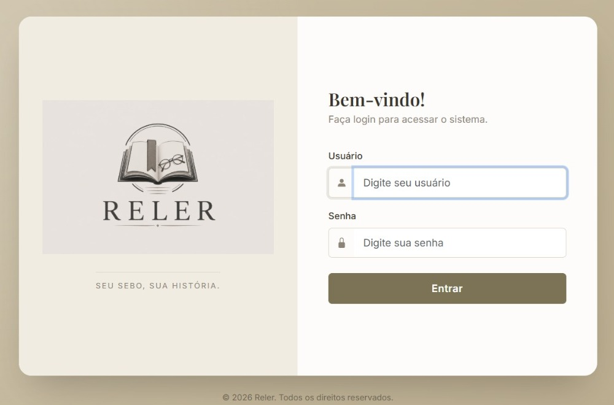
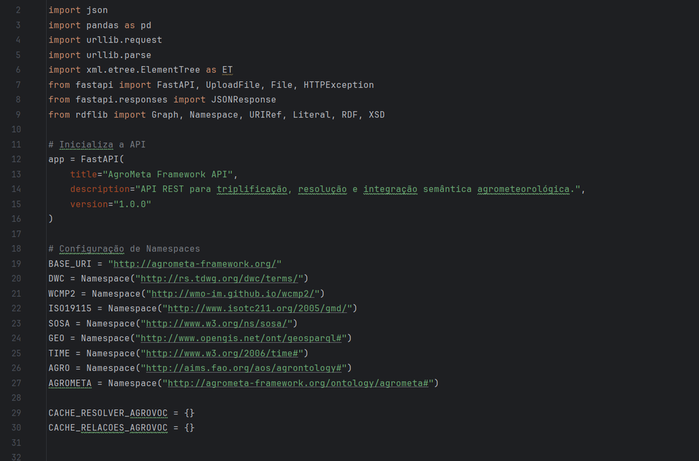

OLÁ, EU SOU
Desenvolvedor backend com experiência em PHP, Laravel, PostgreSQL, APIs REST e integração de sistemas. Foco em modernizar sistemas legados e construir soluções estáveis e fáceis de manter.
Sou desenvolvedor backend com foco em PHP e Laravel e 4 anos de experiência em desenvolvimento, manutenção, evolução e modernização de sistemas institucionais. Meu dia a dia foi resolver problemas reais de sistemas legados, como manter no ar um sistema em PHP 5.6 enquanto ele é modernizado e ajustar o banco de dados sem quebrar nada. Sou mestre em Computação Aplicada pela UEPG, com pesquisa em interoperabilidade de dados, e uso Python para APIs e soluções de dados. Estou buscando uma posição como desenvolvedor backend, em um time que valorize código limpo tanto quanto entrega rápida.
Ver experiênciaCidade
Ponta Grossa - PR Disponibilidade para mudança de cidadeDisponibilidade
Presencial, Remoto ou HíbridoIdiomas
Português (nativo) Inglês (intermediário) Espanhol (intermediário)
Projeto pessoal em Laravel e PostgreSQL para gestão de um sebo, com catálogo, compras, vendas, autenticação e painel administrativo.

API REST desenvolvida no mestrado em Computação Aplicada para integração semântica de metadados agrometeorológicos, promovendo interoperabilidade entre diferentes padrões de dados.
Mai 2024 - Mai 2026
2 anos e 1 mêsUniversidade Estadual de Ponta Grossa (UEPG)
Desenvolvimento e manutenção de sistemas institucionais em PHP e Laravel, com otimização de consultas SQL, automação de rotinas e modernização de sistemas legados.
Dez 2022 - Abr 2024
1 ano e 5 mesesUniversidade Estadual de Ponta Grossa (UEPG)
Administração do ambiente virtual Moodle de 3 cursos de graduação a distância e extração de dados de desempenho acadêmico para as coordenações.
Jul 2020 - Jun 2022
2 anosUniversidade Estadual de Ponta Grossa (UEPG)
Desenvolvimento em Laravel e PostgreSQL do novo sistema de inscrição em cursos de extensão a distância, que substituiu uma aplicação legada em PHP puro, além da manutenção de sistemas legados.
Universidade Estadual de Ponta Grossa (UEPG)
Concluído em 2026IF Sudeste MG
Em andamento - previsão de conclusão: 2027IFPR - Campus Irati
Concluído em 2017Estou disponível para novas oportunidades como desenvolvedor backend. Entre em contato pelos canais abaixo.